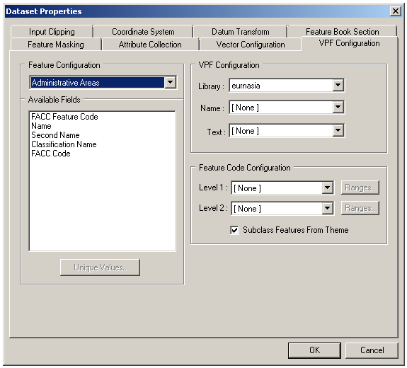

VPF Configuration Panel

The VPF Configuration Panel allows the user to access feature attribute information provided as an inherent part of VPF data.
The attribute information can be used in the following ways:
- To subclass features from the feature classes. Two levels of subclassing are currently provided. These may incorporate class breaks if required. Note that the VPF filter automatically discards attribute data whose value is "No Entry Present".
- To create text primitives (with positioning information) from feature attributes values.
- To attach a name to each primitive.
 To open the VPF Configuration Panel
To open the VPF Configuration Panel
With a piece of VPF Data selected, use Data | Format Configuration…
- With a VPF Dataset selected, use Dataset | Format Configuration… Note that you should open the configuration panel on the individual data items in order to choose the Library for each, before opening the panel on the dataset.
To choose the desired Library
- When the VPF Configuration Panel is opened on an individual Data Item (not a dataset), the user can choose the Library of data that is to be read. VPF data usually contains one or more detailed Libraries, plus a reference Library (for example, low-resolution data for the whole world) that can be used to place the detailed data in context.
To subclass features from the Feature Configuration
- From the Feature Configuration list, choose a feature whose attributes are to be subclassed. The list of attributes for this feature appears in the Available Fields box (this is a read-only list for information only).
- Select the field that is to provide the first level of subclassing from the Level 1 list.
- If a second level of subclassing is required, select the field that is to provide it from the Level 2 list.
- Press OK
- The Data or Dataset affected will be re-catalogued to obtain the new feature code set according to the new settings.
- Use Feature Masking and/or Input Clipping to remove unwanted data from the dataset.
- Use the Feature Book to assign symbols, colours and styles to the subclassed data types.
To apply class breaks to a feature subclass
- In the Feature Code Configuration panel, press Ranges by the appropriate feature subclass level
- Enter the number of break points required
- Choose whether you require MapLink Pro Studio to define the break points by distribution or by range (for numeric data only). Alternatively, the break points may be defined individually
- Press Update to show the updated break point details
- Press Analyse to show the result of the unique value analysis carried out on the data
- Press Accept to apply the changes
To take the feature class of each feature from a single field
- In the panel, select the field that is to provide the feature code from the Level 1 list
- Press OK
- The Data or Dataset affected will be re-catalogued to obtain the new feature code set according to the new settings
To create text primitives from the Feature Configuration
- From the Feature Configuration list, choose a feature whose attributes are to be used to create a text label. The list of attributes for this feature appears in the Available Fields box (this is a read-only list for information only).
- Select the field that is to provide the first level of subclassing from the Text list.
- Press OK
- The Data or Dataset affected will be re-catalogued to obtain the new feature code set according to the new settings.
- Use the Feature Book to change the size, position or style of the text for best effect.
To collect attributes of features from the data for runtime queries
It is possible to import attribute data, for example the name of roads, into the map data. This can then be queried by runtime applications, for example to display information in a pop-up or tool-tip window when the curser is hovered or clicked over the map.
For information, see the Feature Attribute Collection topic.
Links: